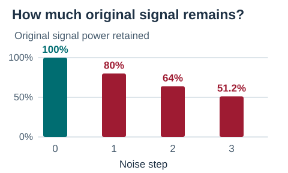

A desk display shows two lights. Its examples often have the left light bright when the right is dim, or vice versa. A generator should produce plausible pairs, including their relationship. We will build small pieces of three ways to learn that relationship.
In Module 12 you sampled tokens from a learned distribution. Modules 02 and 10 introduced Gaussian noise and reconstruction. Keep the idea of sampling, then ask how to generate two measurements together when there is no natural first word.
Check your understanding
If half the training displays are [1, 0] and half are [0, 1], what is their coordinate-wise mean? Does it reproduce either display?
Reveal answer
The mean is [0.5, 0.5]. It lies between the displays. Matching an average alone does not recover their two distinct patterns.
CS 483/583 · Module 13 · Slide 2 of 12
Sample the relationship as well as its parts
A generative model gives us a way to draw a whole observation. Matching each coordinate’s individual distribution is insufficient when the coordinates depend on each other. Begin by listing all outcomes to see which pairs obey the relationship.
Worked example
In this toy population [1, 0] and [0, 1] each occur half the time. Sampling two independent fair bits would produce four equiprobable patterns. Half have equal bits and violate the observed relationship.
Formal notation
x = (x₁, x₂) denotes one observation. p(x₁, x₂) is a joint probability. Independence would mean p(x₁, x₂) = p(x₁)p(x₂).
Show the Python example
from itertools import product
pairs = list(product([0, 1], repeat=2))
valid = [x for x in pairs if x[0] + x[1] == 1]
print("all independent outcomes", pairs)
print("fraction with one light on", len(valid) / len(pairs))
Reveal the output
all independent outcomes [(0, 0), (0, 1), (1, 0), (1, 1)]
fraction with one light on 0.5
Check your understanding
A generator always outputs [1, 0]. Which check does it pass and which does it fail?
Reveal answer
Every pair has exactly one light on. But it never produces [0, 1], which appears half the time in the toy data. Both validity and coverage matter.
CS 483/583 · Module 13 · Slide 3 of 12
Generate from a hidden coordinate
A latent variable is a quantity used by the model that was not directly recorded. Draw a latent coordinate z and send it through a decoder, a function that produces the parameters of an output distribution. Inputs near each other can produce nearby outputs. For binary lamps the decoder can output their probabilities of being on; sampling from these probabilities produces an actual pair.
Worked example
Try a hand-chosen decoder: apply the sigmoid to z for the first light’s mean brightness and to −z for the second. At z = 0 both means equal 0.5. At z = 2 they are about 0.881 and 0.119. These are decoder means, not sampled binary lamps.
Formal notation
z ∼ N(0,1) means draw z from a standard normal prior. m(z) = [σ(z), σ(−z)] gives two means. The prior is the latent distribution used when generating.
Show the Python example
import torch
z = torch.tensor([-2., 0., 2.])
m = torch.stack((z.sigmoid(), (-z).sigmoid()), dim=1)
print([[round(float(x), 3) for x in row] for row in m])
# Draw the two lamps independently conditional on the same sampled latent.
rng = torch.Generator().manual_seed(13)
sampled_z = torch.randn(6, generator=rng)
probs = torch.stack((sampled_z.sigmoid(), (-sampled_z).sigmoid()), dim=1)
lamps = torch.bernoulli(probs, generator=rng).int()
print("six generated lamp pairs:", lamps.tolist())
What new input does this decoder need to generate another pair of means?
Reveal answer
Draw a new z from the prior or choose a specific z to explore. The fixed decoder then maps it to the corresponding pair. To obtain binary lamps, draw each lamp using its decoded probability. Even decoder means that sum to one can produce a pair with both lamps on or both off.
CS 483/583 · Module 13 · Slide 4 of 12
Encode an example as a distribution
In a variational autoencoder (VAE), the encoder reads an observation x and estimates a distribution over latent variables that could explain it. This approximates the posterior, the distribution of z given x. A common encoder outputs a mean μ and a positive standard deviation s. To draw a code, scale and shift a standard normal noise value ε.
Worked example
Suppose the encoder outputs μ = 1, s = 0.5 for [1, 0]. With ε = −1, z = 0.5. With ε = 1, z = 1.5. A decoder maps both codes to brightness means, so the same input can give different reconstructions.
Formal notation
q(z | x) = N(μ,s²). Sampling uses z = μ + sε, ε ∼ N(0,1). During training this form allows gradients through μ and s. The two ε values here are fixed for comparison.
Show the Python example
import torch
x = torch.tensor([1., 0.])
mu = x[0] - x[1] # illustrative encoder
s = torch.tensor(0.5)
for eps in [-1., 1.]:
z = mu + s * eps
reconstruction = torch.stack((z.sigmoid(), (-z).sigmoid()))
print(float(z), [round(float(v), 3) for v in reconstruction])
Reveal the output
0.5 [0.622, 0.378]
1.5 [0.818, 0.182]
Try the interactive lab
Check your understanding
When generating an entirely new example, must we first pass a training pattern through the encoder?
Reveal answer
No. Generation starts with z drawn from the prior. The encoder is used when inferring latent codes from observed examples.
CS 483/583 · Module 13 · Slide 5 of 12
Fit the VAE with two costs
The reconstruction term charges the decoder when the observed output was unlikely under a sampled code. A second term, KL divergence, measures how far the encoder distribution is from the prior for this example. Using both gives a tractable objective when summing over every possible continuous z would be difficult. This approximation is the variational part.
Worked example
Take binary lights [1, 0] and decoder probabilities [0.8, 0.2], conditionally independent given z. The observed pair has probability 0.8 × 0.8. Its loss is about 0.446. An encoder N(1,1) against prior N(0,1) has KL cost 0.5.
Formal notation
VAE cost = E_q[−ln p(x | z)] + KL(q || p). E_q means average over draws from the encoder. For one normal coordinate against N(0,1), KL = (μ² + s² − 1 − ln s²)/2.
If the encoder emits μ = 0 and s = 1 for this example, which cost vanishes?
Reveal answer
The KL cost is zero because the encoder equals the prior. The reconstruction cost can still be large if the decoder poorly predicts the observation.
CS 483/583 · Module 13 · Slide 6 of 12
Compute the discriminator and generator losses
A generative adversarial network (GAN) trains two models. The generator G turns noise into samples. The discriminator D learns to distinguish training observations from generated ones. For a discriminator update, an observed pattern is labeled 1 and a generated pattern is labeled 0. For a generator update, keep the discriminator fixed and change the generator so its samples receive larger scores.
Worked example
Suppose D gives an observed pattern 0.8 and a generated one 0.2. For the observed pattern, D assigns 0.8 to the training-data label. For the generated pattern, 1 − D = 0.8 is the probability it assigns to the generated label. The usual non-saturating generator objective instead charges −ln(0.2) on that fake pattern. The objectives pull the fake score in opposite directions.
Formal notation
D(x) is the predicted probability of the training-data label. L_D = −ln D(real) − ln(1−D(fake)) for one pair. A common generator loss is L_G = −ln D(G(z)).
If the fixed discriminator raises its score on the generated sample from 0.2 to 0.6, how does the generator loss change?
Reveal answer
It falls from about 1.609 to 0.511. This single improvement says nothing about coverage of the other training pattern.
CS 483/583 · Module 13 · Slide 7 of 12
Corrupt a clean signal gradually
A diffusion model trains by adding known noise to clean data and learning to undo corruption. Start with one brightness measurement x₀. At each forward step, retain part of the previous signal and add Gaussian noise. Repeating this operation makes the endpoint progressively less informative about the start on average.
Worked example
Let each step retain a = 0.8 of signal power. Its signal coefficient is √0.8 and its noise coefficient is √0.2. After three steps, the fraction of original signal power retained is 0.8³ = 0.512. An individual noisy value can move in either direction.
Formal notation
xₜ = √a xₜ₋₁ + √(1−a) εₜ, with independent εₜ ∼ N(0,1). After t equal steps the cumulative retention is āₜ = aᵗ.

Show the Python example
import math, torch
gen = torch.Generator().manual_seed(32)
x, a = 1., .8
for t in range(1, 4):
eps = float(torch.randn(1, generator=gen))
x = math.sqrt(a)*x + math.sqrt(1-a)*eps
print(t, "signal power", round(a**t, 3), "noisy value", round(x, 3))
Reveal the output
1 signal power 0.8 noisy value 1.281
2 signal power 0.64 noisy value 1.159
3 signal power 0.512 noisy value 1.271
Check your understanding
If each step retains 0.5 of signal power, how much original signal power remains after three steps?
Reveal answer
Multiply 0.5 × 0.5 × 0.5 = 0.125. The coefficient on the original measurement is the square root of 0.125.
CS 483/583 · Module 13 · Slide 8 of 12
Teach a network what noise looks like
During training we know the original signal, the noise level and the noise draw. We can construct a noisy input in one operation and compare the network’s noise estimate with that draw using squared error. At generation time the actual noise is unknown. The estimate relies on patterns learned from many training examples.
Worked example
With cumulative retention 0.64, the signal multiplier is 0.8 and the noise multiplier is 0.6. A clean value 1 with noise −0.5 gives a noisy value 0.5. Predicting noise −0.4 costs 0.01 and implies an estimated clean value of 0.925. Now adjust the one model weight using its gradient and measure the loss again on these two examples.
Formal notation
xₜ = √āₜ x₀ + √(1−āₜ) ε. The target for εθ(xₜ,t) is ε. Solving the same equation with predicted noise produces a clean estimate. θ represents adjustable weights.
Show the Python example
import torch
x0 = torch.tensor([1., -1.])
eps = torch.tensor([-.5, .5])
xt = .8*x0 + .6*eps
model = torch.nn.Linear(1, 1, bias=False)
with torch.no_grad():
model.weight.fill_(-.8)
pred = model(xt[:, None]).flatten() # one fixed noise level
loss = (pred - eps).square().mean()
loss.backward()
print("noisy inputs", xt.tolist(), "loss", round(float(loss.detach()), 3))
print("clean estimates", [round(float(v), 3) for v in ((xt-.6*pred.detach())/.8)])
with torch.no_grad():
model.weight -= 0.5 * model.weight.grad
updated_loss = (model(xt[:, None]).flatten() - eps).square().mean()
print("after one step: weight", round(model.weight.item(), 3),
"training loss", round(updated_loss.item(), 4))
Reveal the output
noisy inputs [0.5, -0.5] loss 0.01
clean estimates [0.925, -0.925]
after one step: weight -0.85 training loss 0.0056
Check your understanding
Why provide the noise level t when training one denoiser across several levels?
Reveal answer
The same observed brightness can result from very different amounts of corruption. The appropriate estimate depends on how much original signal was retained.
CS 483/583 · Module 13 · Slide 9 of 12
Generate through a sequence of reverse steps
A sampler starts from noise and repeatedly uses a noise estimate to move toward a cleaner sample. A deterministic sampler can reuse the estimated clean signal and residual noise at a slightly cleaner level. Repeat with a fresh prediction at each level. Different starting noise draws can give different final samples. This finite-step calculation approximates reverse sampling; the value at the final step is a clean estimate.
Worked example
Let a hidden sign be either −1 or +1 with probability ½. After corruption, a positive reading favors +1, but a reading near zero offers little evidence for either sign. If the posterior probability of +1 is p, the average clean sign is (+1)p + (−1)(1−p) = 2p−1. Use this computable average as the denoiser. Here no training set or learned weights are needed.
Formal notation
Let b be the cumulative retention and y the noisy reading. In this toy distribution, y given either sign is Gaussian with mean ±√b and variance 1−b. Bayes’ rule gives the log odds of +1 as r = 2√b y/(1−b). The average clean sign is m = 2σ(r)−1 = tanh(r/2). Estimate the noise as e = (y−√b m)/√(1−b). At the next, cleaner level c, use y′ = √c m + √(1−c)e. Each step recomputes m from the new reading.
Show the Python example
import math
levels = [.01, .25, .64, .90, 1.]
for start in [-.8, .8]:
y = start # two illustrative starting noise values
path = [round(y, 3)]
for b, c in zip(levels, levels[1:]):
clean = math.tanh(math.sqrt(b)*y/(1-b))
residual = (y - math.sqrt(b)*clean)/math.sqrt(1-b)
y = math.sqrt(c)*clean + math.sqrt(1-c)*residual
path.append(round(y, 3))
print(path)
Can this sampler recover which training signal originally produced an independently drawn noise value?
Reveal answer
There is no paired training signal for a new generation draw. The reverse updates aim to produce a sample consistent with the learned data distribution.
CS 483/583 · Module 13 · Slide 10 of 12
Choose evidence for a generator
The VAE fits a bound on data log likelihood using reconstruction and a prior. A GAN trains from a discriminator’s real/fake feedback. The diffusion example fits a denoising objective at known noise levels. All three need evaluation on what matters for the application. Inspect samples for both valid structure and coverage.
Worked example
Compare two sets of generated displays. One generator covers both valid patterns but also yields an invalid pair. Another emits only the left-on pattern. Count valid pairs separately from the number of distinct valid patterns represented. The two measures diagnose different failures.
Formal notation
Validity = valid generated count / total generated count. Coverage here = distinct valid patterns generated / 2. This small finite example lets us count every valid pattern; real data rarely offer that convenience.
Show the Python example
valid = {(1,0), (0,1)}
for batch in [[(1,0),(0,1),(1,1),(0,1)], [(1,0)]*4]:
pass_rate = sum(x in valid for x in batch)/len(batch)
coverage = len(set(batch) & valid)/len(valid)
print("validity", pass_rate, "coverage", coverage)
Which generator would pass a validity-only test with a perfect score while failing to cover the data?
Reveal answer
The generator that always emits [1, 0] passes validity every time but covers only one of the two valid patterns.
CS 483/583 · Module 13 · Slide 11 of 12
End-of-module questions
Question 1
Reconstruct [0,1] with decoded Bernoulli probabilities [0.25,0.75]. Compute its one-draw reconstruction loss.
Reveal the worked answer
The joint probability under conditional independence is (1−0.25)×0.75 = 0.5625. The loss is −ln(0.5625) ≈ 0.575.
Question 2
An encoder gives μ = −1, s = 0.25. With ε = 2, find z and state how an unconditioned VAE sample would start instead.
Reveal the worked answer
z = −1 + 0.25 × 2 = −0.5. An unconditioned sample first draws z from the prior, then runs the decoder.
Question 3
A discriminator assigns D(real) = 0.9 and D(fake) = 0.4. Find both training losses using the lesson’s sum convention.
Reveal the worked answer
The discriminator loss is −ln(0.9) − ln(0.6) ≈ 0.616. The non-saturating generator loss is −ln(0.4) ≈ 0.916.
Question 4
At cumulative retention 0.36, the noisy measurement is 0.7. A model predicts noise 0.5. Estimate the clean signal.
Reveal the worked answer
Subtract the estimated noise contribution first: (0.7−0.8×0.5)/0.6 = 0.5. An inaccurate noise prediction changes this estimate.
Question 5
In a three-step sequence, signal power retention per step is 0.9, 0.8 and 0.5. Find the total retention and interpret it.
Reveal the worked answer
Total retention is 0.36. The original signal’s coefficient is √0.36 = 0.6. The remaining variance from the forward Gaussian noises is 0.64.
Question 6
A team wants diverse samples and reports five visually attractive outputs chosen by its authors. What evidence is missing?
Reveal the worked answer
Generate a prespecified batch from independent random draws and measure validity and coverage using explicit criteria. Report failures and duplicates. A handpicked display cannot establish frequencies.
CS 483/583 · Module 13 · Slide 12 of 12
From this module to the next
These models learn to sample observations. A decision maker faces an additional question: if it acts, how will that change the next observation and its future reward? In Module 14, an agent chooses actions and follows their consequences over time.
Check your understanding
A model produces plausible pictures of a room. What else would you need to choose whether a robot should wait or move?
Reveal answer
Specify the available actions, how each can change the state, what reward follows and how future rewards count. A plausible picture alone does not compare the consequences of the choices.